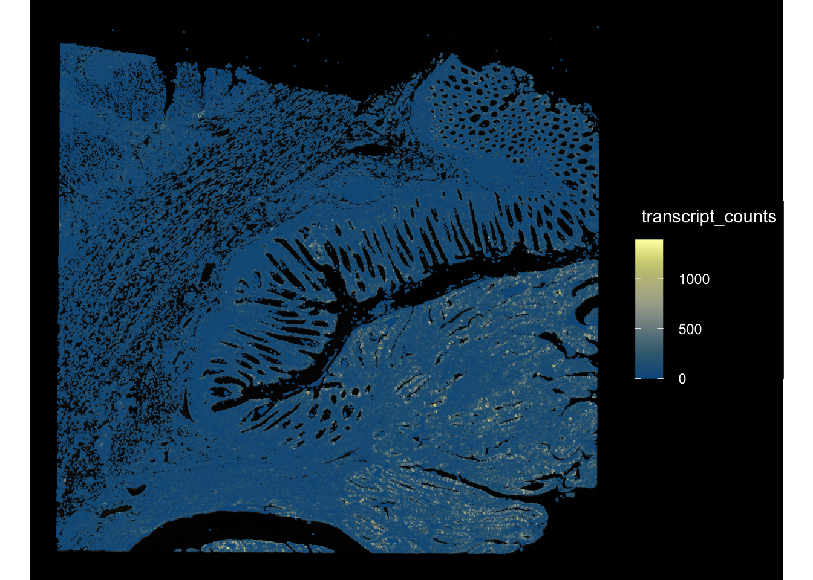
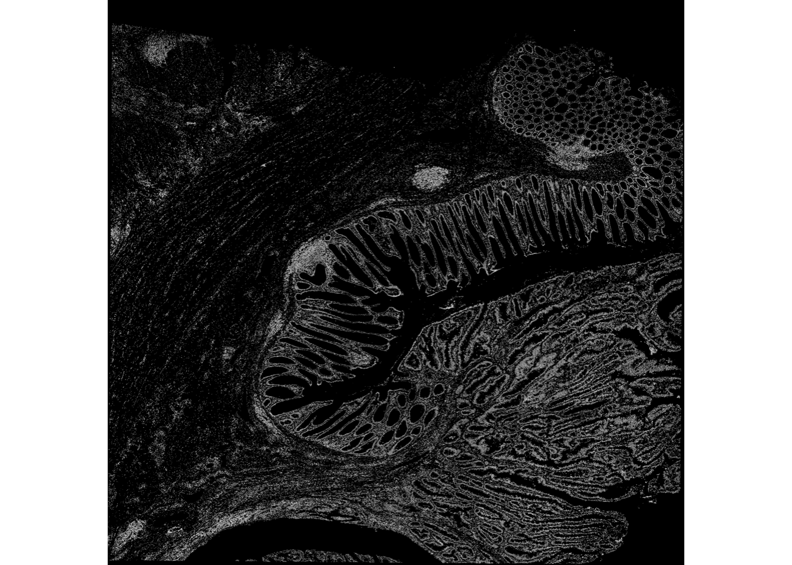
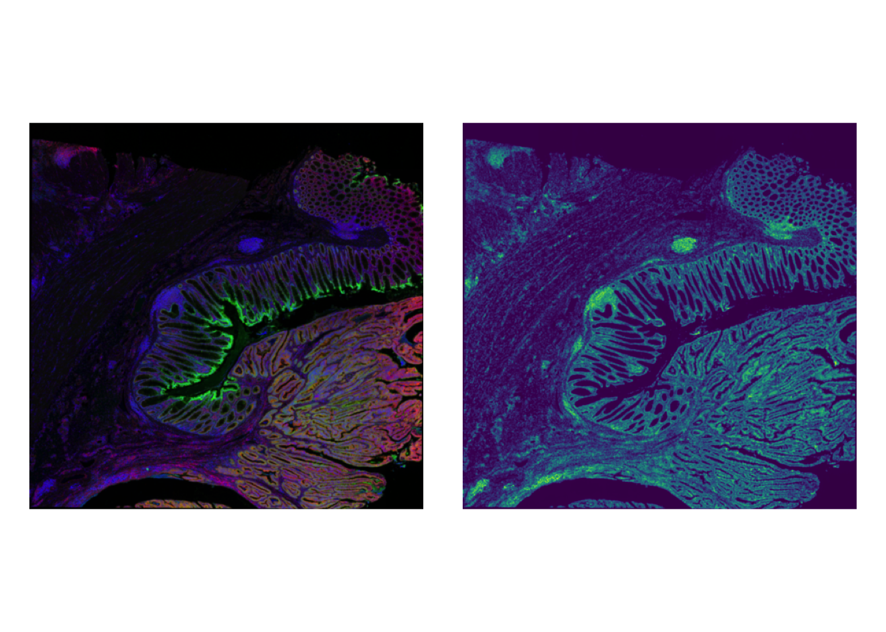
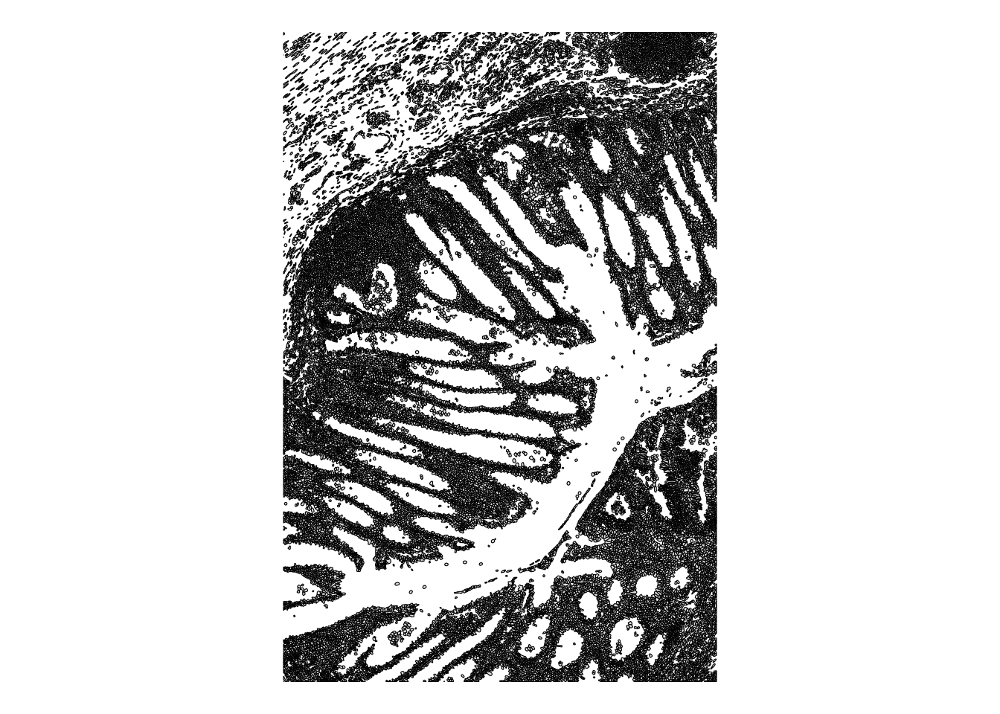
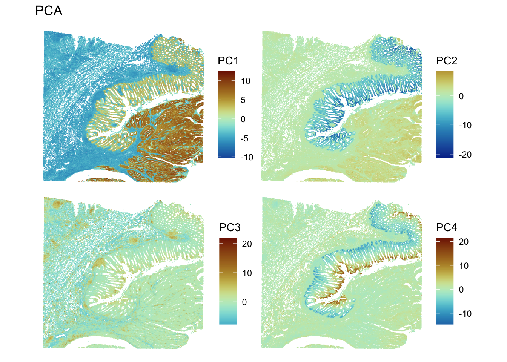
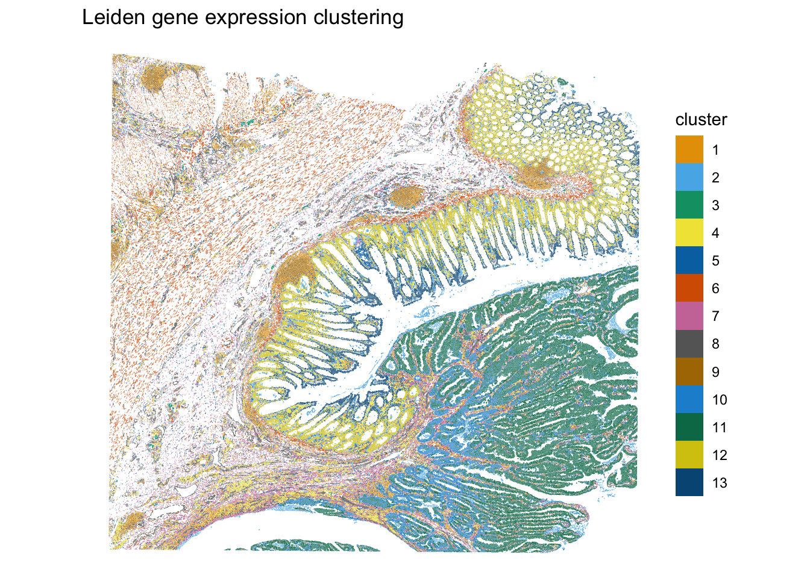
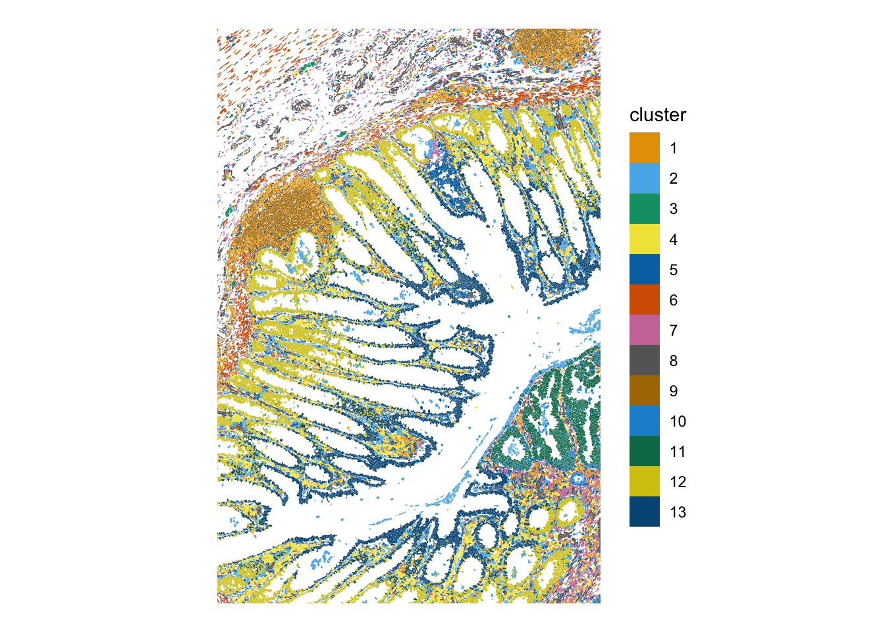
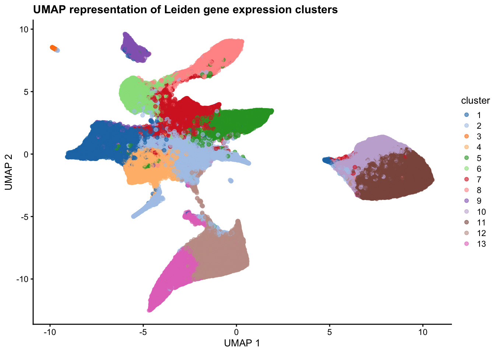

Last updated: 2024-11-20
Checks: 7 0
Knit directory: asi_spatial_workshop_2024/
This reproducible R Markdown analysis was created with workflowr (version 1.7.1). The Checks tab describes the reproducibility checks that were applied when the results were created. The Past versions tab lists the development history.
Great! Since the R Markdown file has been committed to the Git repository, you know the exact version of the code that produced these results.
Great job! The global environment was empty. Objects defined in the global environment can affect the analysis in your R Markdown file in unknown ways. For reproduciblity it’s best to always run the code in an empty environment.
The command set.seed(20240925) was run prior to running
the code in the R Markdown file. Setting a seed ensures that any results
that rely on randomness, e.g. subsampling or permutations, are
reproducible.
Great job! Recording the operating system, R version, and package versions is critical for reproducibility.
Nice! There were no cached chunks for this analysis, so you can be confident that you successfully produced the results during this run.
Great job! Using relative paths to the files within your workflowr project makes it easier to run your code on other machines.
Great! You are using Git for version control. Tracking code development and connecting the code version to the results is critical for reproducibility.
The results in this page were generated with repository version e5a7744. See the Past versions tab to see a history of the changes made to the R Markdown and HTML files.
Note that you need to be careful to ensure that all relevant files for
the analysis have been committed to Git prior to generating the results
(you can use wflow_publish or
wflow_git_commit). workflowr only checks the R Markdown
file, but you know if there are other scripts or data files that it
depends on. Below is the status of the Git repository when the results
were generated:
Ignored files:
Ignored: .Rproj.user/
Ignored: stomics/
Ignored: visium/
Untracked files:
Untracked: RCTD_Plots/
Untracked: xenium/
Note that any generated files, e.g. HTML, png, CSS, etc., are not included in this status report because it is ok for generated content to have uncommitted changes.
These are the previous versions of the repository in which changes were
made to the R Markdown (analysis/Xenium_Part2.Rmd) and HTML
(docs/Xenium_Part2.html) files. If you’ve configured a
remote Git repository (see ?wflow_git_remote), click on the
hyperlinks in the table below to view the files as they were in that
past version.
| File | Version | Author | Date | Message |
|---|---|---|---|---|
| Rmd | e5a7744 | Cathal King | 2024-11-20 | updating Xenium analysis files |
| Rmd | d159369 | Cathal King | 2024-11-20 | move script to analysis directory |
Introduction to image processing
QC of Xenium data
Clustering and dimensionality reduction analysis
The Xenium data should be loaded in from part 1 of the analysis
in the se object
If its not, read in data with
readRDS(xenium/data/se_xenium.rds)
se <- readRDS(file = "xenium/data/se_xenium.rds")imgData and
imageIDsRBioFormats
package.terra::ext()imgData(se)DataFrame with 1 row and 4 columns
sample_id image_id data scaleFactor
<character> <character> <list> <numeric>
1 p5 morphology_focus 31470 x 30874 x 4 BioFormatsImage 1imageIDs(se)[1] "morphology_focus"(img <- getImg(se, image_id = "morphology_focus"))X: 31470, Y: 30874, C: 4, Z: 1, T: 1, BioFormatsImage
imgSource():
/Users/cathal.king/Library/CloudStorage/OneDrive-SouthAustralianHealthandMedicalResearchInstituteLtd/Workshops/ASI_workshop/asi_spatial_workshop_2024/xenium/raw/morphology_focus/morphology_focus_0000.ome.tif # plot image overlayed with metadata
# features can be any of colData
plotSpatialFeature(se, features = "transcript_counts",
colGeometryName = "cellSeg",
aes_use = "color", fill = NA, # Only color by cell outline
image_id = "morphology_focus", dark = TRUE, channel = 1)
# get the extend of the spatial image
terra::ext(img) xmin xmax ymin ymax
0.000 6687.375 -6560.725 0.000 # convert BioFormatsImage to ExtImage
ebi <- toExtImage(img)
# display with EBimage
#EBImage::display(normalize(ebi))
th <- EBImage::otsu(ebi, range = range(ebi), levels = max(ebi))
mask <- ebi > th
EBImage::display(mask)Only the first frame of the image stack is displayed.
To display all frames use 'all = TRUE'.
#plotImage(se, image_id = "morphology_focus", channel = 3:1, normalize_channels = TRUE)
# plot side-by-side
plotImage(se, image_id = "morphology_focus", channel = 3:1, normalize_channels = TRUE) +
plotImage(se, image_id = "morphology_focus", channel = 1, palette = viridis_pal()(255))
# for example
bbox <- c(xmin = 2000, xmax = 4000, ymin = -5000, ymax = -2000)
# plot
plotGeometry(se, colGeometryName = "cellSeg", bbox = bbox)
# a smaller ROI
#bbox <- c(xmin = 0, xmax = 200, ymin = -600, ymax = -400)
# plotSpatialFeature(se, features = "total_counts",
# colGeometryName = "cellSeg",
# aes_use = "color", fill = NA, # Only color by cell outline
# image_id = "morphology_focus", dark = TRUE, bbox = bbox, channel = 1)colData columns in SE can be accessed with the $
operator as if getting a column from a data frame# check dims
dim(se)[1] 541 275998# contains pre-computed QC metrics
names(colData(se))[1] "transcript_counts" "control_probe_counts"
[3] "control_codeword_counts" "unassigned_codeword_counts"
[5] "deprecated_codeword_counts" "total_counts"
[7] "cell_area" "nucleus_area"
[9] "sample_id" # filter metadata
se <- se[, se$total_counts > 5]
# filter counts matrix
se <- se[rowSums(counts(se)) > 0,]
# check dims again
dim(se)[1] 539 274000se
object.# normalise
se <- logNormCounts(se, size.factors = se$cell_area)
# check the assays slot
seclass: SpatialFeatureExperiment
dim: 539 274000
metadata(1): Samples
assays(2): counts logcounts
rownames(539): ABCC8 ACP5 ... UnassignedCodeword_0330
UnassignedCodeword_0338
rowData names(3): ID Symbol Type
colnames(274000): aaaadchh-1 aaaaglla-1 ... oinihnka-1 oiniiibd-1
colData names(10): transcript_counts control_probe_counts ... sample_id
sizeFactor
reducedDimNames(0):
mainExpName: NULL
altExpNames(0):
spatialCoords names(2) : x_centroid y_centroid
imgData names(4): sample_id image_id data scaleFactor
unit: micron
Geometries:
colGeometries: centroids (POINT), cellSeg (MULTIPOLYGON), nucSeg (MULTIPOLYGON)
Graphs:
p5: # Log counts getter
logcounts(se) |> head()<6 x 274000> sparse DelayedMatrix object of type "double":
aaaadchh-1 aaaaglla-1 aaaanjng-1 ... oinihnka-1 oiniiibd-1
ABCC8 0.000000 0.000000 0.000000 . 0.000000 0.000000
ACP5 1.173393 0.000000 0.000000 . 0.000000 0.000000
ACTA2 1.173393 0.000000 2.165423 . 3.220612 0.000000
ADH1C 0.000000 0.000000 0.000000 . 0.000000 0.000000
ADRA2A 0.000000 0.000000 0.000000 . 0.000000 0.000000
AFAP1L2 0.000000 0.000000 0.000000 . 0.000000 0.000000se <- runPCA(se, ncomponents = 20,
exprs_values = "logcounts", scale = TRUE)
# find in object
pca_res <- reducedDim(se, "PCA")
# check dim names slot
seclass: SpatialFeatureExperiment
dim: 539 274000
metadata(1): Samples
assays(2): counts logcounts
rownames(539): ABCC8 ACP5 ... UnassignedCodeword_0330
UnassignedCodeword_0338
rowData names(3): ID Symbol Type
colnames(274000): aaaadchh-1 aaaaglla-1 ... oinihnka-1 oiniiibd-1
colData names(10): transcript_counts control_probe_counts ... sample_id
sizeFactor
reducedDimNames(1): PCA
mainExpName: NULL
altExpNames(0):
spatialCoords names(2) : x_centroid y_centroid
imgData names(4): sample_id image_id data scaleFactor
unit: micron
Geometries:
colGeometries: centroids (POINT), cellSeg (MULTIPOLYGON), nucSeg (MULTIPOLYGON)
Graphs:
p5: # getter
reducedDimNames(se)[1] "PCA"# plot PCA results
spatialReducedDim(se, "PCA", 4, colGeometryName = "centroids", divergent = TRUE,
diverge_center = 0, ncol = 2, scattermore = TRUE, pointsize = 1.5)
bluster::clusterRows()plotSpatialFeature function.runUMAP function and plot.set.seed(29)
# run clustering
colData(se)$cluster <- clusterRows(reducedDim(se, "PCA")[,1:15],
BLUSPARAM = SNNGraphParam(
cluster.fun = "leiden",
cluster.args = list(
resolution_parameter = 0.5,
objective_function = "modularity")))
# examine results
# This will make a new column called cluster in the colData slot
colData(se)DataFrame with 274000 rows and 11 columns
transcript_counts control_probe_counts control_codeword_counts
<integer> <integer> <integer>
aaaadchh-1 56 0 0
aaaaglla-1 51 0 0
aaaanjng-1 45 0 0
aaabakie-1 37 0 0
aaabalkl-1 112 0 0
... ... ... ...
oiniccld-1 20 0 0
oinicmgd-1 8 0 0
oiniecfb-1 44 0 0
oinihnka-1 6 0 0
oiniiibd-1 56 0 0
unassigned_codeword_counts deprecated_codeword_counts total_counts
<integer> <integer> <integer>
aaaadchh-1 0 0 56
aaaaglla-1 0 0 51
aaaanjng-1 0 0 45
aaabakie-1 0 0 37
aaabalkl-1 0 0 112
... ... ... ...
oiniccld-1 0 0 20
oinicmgd-1 0 0 8
oiniecfb-1 0 0 44
oinihnka-1 0 0 6
oiniiibd-1 0 0 56
cell_area nucleus_area sample_id sizeFactor cluster
<numeric> <numeric> <character> <numeric> <factor>
aaaadchh-1 49.9880 31.3384 p5 0.796549 1
aaaaglla-1 44.5241 25.8294 p5 0.709483 1
aaaanjng-1 54.0069 33.6866 p5 0.860590 1
aaabakie-1 49.4461 31.3384 p5 0.787915 1
aaabalkl-1 74.2369 35.7638 p5 1.182951 1
... ... ... ... ... ...
oiniccld-1 20.81703 16.57234 p5 0.331716 2
oinicmgd-1 18.73984 18.73984 p5 0.298616 2
oiniecfb-1 42.58235 42.58235 p5 0.678542 5
oinihnka-1 7.54109 7.54109 p5 0.120166 4
oiniiibd-1 177.96079 21.17828 p5 2.835773 2table(se$cluster)
1 2 3 4 5 6 7 8 9 10 11 12 13
29026 24961 184 16497 17341 16349 21933 21270 8870 23819 54965 23998 14787 # plot clusters
plotSpatialFeature(se, "cluster", colGeometryName = "cellSeg", pointsize = 1.4) + ggtitle("Leiden gene expression clustering")
# bbox
plotSpatialFeature(se, "cluster", colGeometryName = "cellSeg", bbox = bbox)
# UMAP
se <- runUMAP(se, dimred="PCA")
plotUMAP(object = se, dimred = "UMAP", colour_by = "cluster") + ggtitle("UMAP representation of Leiden gene expression clusters")
#, text_by = "cluster"
# choose a gene from rowData
# plotSpatialFeature(se, "ACP5", colGeometryName = "cellSeg",
# image_id = "morphology_focus",
# fill = NA, aes_use = "color", linewidth = 0.15,
# tx_fixed = list(color = "lightgray"),
# channel = 3:1, dark = TRUE, normalize_channels = TRUE)Checkpoint
saveRDS(object = se, file = "xenium/data/se_clust.rds")
sessionInfo()R version 4.4.0 (2024-04-24)
Platform: aarch64-apple-darwin20
Running under: macOS Sonoma 14.7.1
Matrix products: default
BLAS: /Library/Frameworks/R.framework/Versions/4.4-arm64/Resources/lib/libRblas.0.dylib
LAPACK: /Library/Frameworks/R.framework/Versions/4.4-arm64/Resources/lib/libRlapack.dylib; LAPACK version 3.12.0
locale:
[1] en_US.UTF-8/en_US.UTF-8/en_US.UTF-8/C/en_US.UTF-8/en_US.UTF-8
time zone: Australia/Adelaide
tzcode source: internal
attached base packages:
[1] stats4 stats graphics grDevices utils datasets methods
[8] base
other attached packages:
[1] plotly_4.10.4 scales_1.3.0
[3] terra_1.7-78 EBImage_4.48.0
[5] sf_1.0-19 bluster_1.16.0
[7] fs_1.6.5 scran_1.34.0
[9] BiocParallel_1.40.0 scater_1.34.0
[11] ggplot2_3.5.1 scuttle_1.16.0
[13] SingleCellExperiment_1.28.1 SummarizedExperiment_1.36.0
[15] Biobase_2.66.0 GenomicRanges_1.58.0
[17] GenomeInfoDb_1.42.0 IRanges_2.40.0
[19] S4Vectors_0.44.0 BiocGenerics_0.52.0
[21] MatrixGenerics_1.18.0 matrixStats_1.4.1
[23] RBioFormats_1.6.0 Voyager_1.8.1
[25] SpatialFeatureExperiment_1.8.2 workflowr_1.7.1
loaded via a namespace (and not attached):
[1] RcppAnnoy_0.0.22 later_1.3.2
[3] bitops_1.0-9 tibble_3.2.1
[5] R.oo_1.27.0 lifecycle_1.0.4
[7] edgeR_4.4.0 rprojroot_2.0.4
[9] processx_3.8.4 lattice_0.22-6
[11] magrittr_2.0.3 limma_3.62.1
[13] sass_0.4.9 rmarkdown_2.29
[15] jquerylib_0.1.4 yaml_2.3.10
[17] metapod_1.14.0 httpuv_1.6.15
[19] sp_2.1-4 cowplot_1.1.3
[21] DBI_1.2.3 abind_1.4-8
[23] zlibbioc_1.52.0 purrr_1.0.2
[25] R.utils_2.12.3 RCurl_1.98-1.16
[27] git2r_0.35.0 GenomeInfoDbData_1.2.13
[29] ggrepel_0.9.6 irlba_2.3.5.1
[31] units_0.8-5 RSpectra_0.16-2
[33] dqrng_0.4.1 DelayedMatrixStats_1.28.0
[35] codetools_0.2-20 DropletUtils_1.26.0
[37] DelayedArray_0.32.0 xml2_1.3.6
[39] tidyselect_1.2.1 UCSC.utils_1.2.0
[41] memuse_4.2-3 farver_2.1.2
[43] ScaledMatrix_1.14.0 viridis_0.6.5
[45] jsonlite_1.8.9 BiocNeighbors_2.0.0
[47] e1071_1.7-16 tools_4.4.0
[49] ggnewscale_0.5.0 Rcpp_1.0.13-1
[51] glue_1.8.0 gridExtra_2.3
[53] SparseArray_1.6.0 xfun_0.49
[55] dplyr_1.1.4 HDF5Array_1.34.0
[57] withr_3.0.2 fastmap_1.2.0
[59] boot_1.3-31 rhdf5filters_1.18.0
[61] fansi_1.0.6 spData_2.3.3
[63] callr_3.7.6 digest_0.6.37
[65] rsvd_1.0.5 R6_2.5.1
[67] colorspace_2.1-1 wk_0.9.4
[69] scattermore_1.2 jpeg_0.1-10
[71] R.methodsS3_1.8.2 utf8_1.2.4
[73] tidyr_1.3.1 generics_0.1.3
[75] data.table_1.16.2 class_7.3-22
[77] httr_1.4.7 htmlwidgets_1.6.4
[79] S4Arrays_1.6.0 whisker_0.4.1
[81] spdep_1.3-6 uwot_0.2.2
[83] pkgconfig_2.0.3 scico_1.5.0
[85] rJava_1.0-11 gtable_0.3.6
[87] XVector_0.46.0 htmltools_0.5.8.1
[89] fftwtools_0.9-11 png_0.1-8
[91] SpatialExperiment_1.16.0 knitr_1.49
[93] rstudioapi_0.17.1 rjson_0.2.23
[95] proxy_0.4-27 cachem_1.1.0
[97] rhdf5_2.50.0 stringr_1.5.1
[99] KernSmooth_2.23-24 parallel_4.4.0
[101] vipor_0.4.7 arrow_17.0.0.1
[103] s2_1.1.7 pillar_1.9.0
[105] grid_4.4.0 vctrs_0.6.5
[107] promises_1.3.0 BiocSingular_1.22.0
[109] beachmat_2.22.0 sfheaders_0.4.4
[111] cluster_2.1.6 beeswarm_0.4.0
[113] evaluate_1.0.1 zeallot_0.1.0
[115] magick_2.8.5 cli_3.6.3
[117] locfit_1.5-9.10 compiler_4.4.0
[119] rlang_1.1.4 crayon_1.5.3
[121] labeling_0.4.3 classInt_0.4-10
[123] ps_1.8.1 getPass_0.2-4
[125] ggbeeswarm_0.7.2 stringi_1.8.4
[127] viridisLite_0.4.2 deldir_2.0-4
[129] assertthat_0.2.1 munsell_0.5.1
[131] lazyeval_0.2.2 tiff_0.1-12
[133] Matrix_1.7-1 patchwork_1.3.0
[135] sparseMatrixStats_1.18.0 bit64_4.5.2
[137] Rhdf5lib_1.28.0 statmod_1.5.0
[139] igraph_2.1.1 bslib_0.8.0
[141] bit_4.5.0